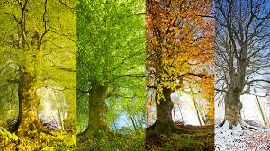
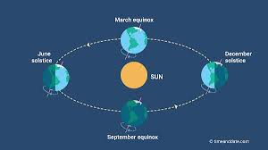
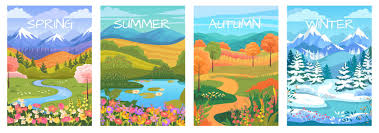

Seasons
Seasons are periods of the year with distinct weather patterns, caused by Earth's axial tilt as it orbits the sun. The four main seasons are spring, summer, autumn (fall), and winter. The tilt causes different hemispheres to receive more or less direct sunlight, leading to opposite seasons in the Northern and Southern Hemispheres.
A season is a period of the year that is distinguished by special climate conditions. The four seasons—spring, summer, fall, and winter—follow one another regularly. Each has its own light, temperature, and weather patterns that repeat yearly. In the Northern Hemisphere, winter generally begins on December 21 or 22.
Seasons are nature's cyclical ballet, a predictable rhythm driven by Earth's tilt and its orbit around the Sun. They bring a predictable ebb and flow of weather, daylight, and life. Spring awakens the world with blossoming flowers and burgeoning new growth after the dormancy of winter's chill. Summer arrives with long, sun-drenched days, providing warmth and vibrant activity. Autumn then paints the landscape in fiery hues as leaves change color and fall, leading into winter, a period of quiet repose, cold temperatures, and often snow. This continuous cycle ensures renewal and diversity across our planet.
Seasons are nature's cyclical ballet, a predictable rhythm driven by Earth's tilt and its orbit around the Sun. They bring a predictable ebb and flow of weather, daylight, and life. Spring awakens the world with blossoming flowers and burgeoning new growth after the dormancy of winter's chill. Summer arrives with long, sun-drenched days, providing warmth and vibrant activity. Autumn then paints the landscape in fiery hues as leaves change color and fall, leading into winter, a period of quiet repose, cold temperatures, and often snow. This continuous cycle ensures renewal and diversity across our planet.
Season images


Home
Videos on Seasons
Home